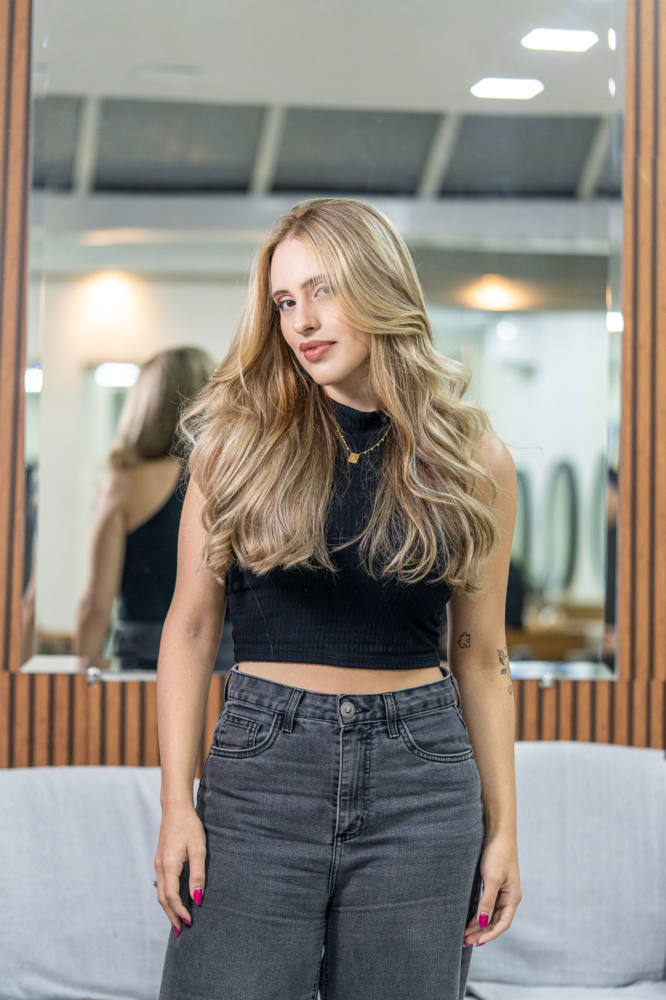

How to keep your Hair healthy
Learn your hair type - Whether you have curly, straight, coarse, fine, or another type of hair, there are products and routines that will work for you. Choose hair care products that say they’re made for your hair type.
we offer a range of hair and services to help you look and feel your best
Learn your hair type - Whether you have curly, straight, coarse, fine, or another type of hair, there are products and routines that will work for you. Choose hair care products that say they’re made for your hair type.
Apply shampoo to your scalp, instead of the entire lenght of your hair - Conditioner moisturizes and detangles your hair, and makes it easier to manage. If you have fine or straight hair, apply conditioner to the ends of your hair. However, if your hair is dry or curly, apply conditioner to the entire length of your hair.
Be gentle with your hair - Hair is delicate when it’s wet, so use a wide-tooth comb instead of a brush to detangle wet hair. If you have thick, curly hair, the best time to comb is in the shower before rinsing out your conditioner. If you have straight hair, let your hair dry a bit before combing. Slowly comb the ends of your hair first then keep combing higher to detangle your hair with minimal damage.
Protect your hair from heat - No matter your hair type, excessive heat can cause damage. Limit blow drying and use of tools like flat or curling irons. Use low or medium heat settings and a product to protect your hair from the heat.
